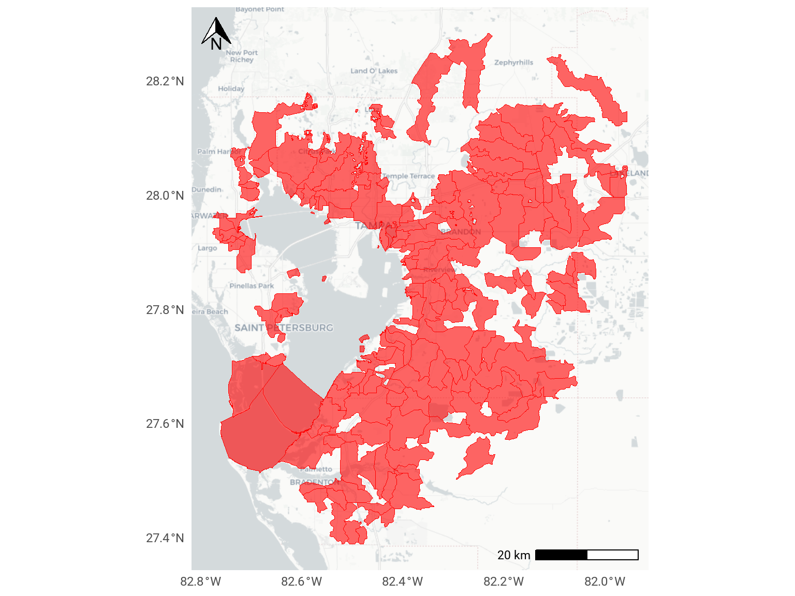

PH-4
Reduce fecal contamination from humans and pets in bay area waters
OBJECTIVES:
Reduce pet and human waste fecal contamination in Tampa Bay Area waters designated Class III “fishable and swimmable.” Conduct research to better quantify sources of fecal contamination. Include strategies to address hot spots in these water segments in Basin Management Action Plans (BMAPs). Expand waterborne fecal contamination monitoring to additional areas where people and pets congregate. Continue to educate the public about proper disposal of pet waste.
STATUS:
Action moved and renamed from Public Access Action Plan (PA-1: Reduce Human and Pet Waste in Traditional Recreation Areas). Action expanded to encompass all Tampa Bay Area waters designated Class III “fishable and swimmable.” Focus placed on pet waste and direct human waste pollution.
Considerable progress has been made in addressing proper disposal of pet waste. Basin Management Action Plans have or will be adopted for bay waters designated as impaired for fecal coliforms, with specific strategies focused on reducing fecal coliform pollution. More information is needed to quantify whether and to what extent fecal contamination associated with recreational areas lacking restroom facilities, or from homeless populations in urban centers, is a problem.
BACKGROUND:
Tampa Bay supports a wide range of aquatic recreational activities, including boating, fishing, swimming, and paddle-boarding. The health of Tampa Bay’s waters is linked to our region’s economy, environment and quality of life. Fecal contamination of waterways can contribute bacteria, viruses and parasites that cause a variety of illnesses ranging from rashes, infections and diarrhea to more serious and life-threatening conditions.

Many bay waters and tributaries experience fecal contamination periodically from a variety of sources, including sewer overflows, wildlife, domestic livestock, pets and humans. Potential problem areas include recreational areas without restroom facilities, marinas and mooring fields where discharges of waste from liveaboard boaters may occur (see Action PH-5) or urban waterfronts with large homeless populations.
Fecal matter from feral or free-roaming cats, or urban livestock may be a local or seasonal contributor (e.g., horse manure generated during racing season at Tampa Bay Downs). However, little is known about the magnitude of these localized impacts; overall, bacterial levels in waste from these animals are lower than for dogs or humans. Farms and ranches in the upper parts of the watershed can be sources of fecal contamination in more rural areas of the watershed, as well as backyard chicken coops in urban areas (see Action SW-8).
Sewer overflows are addressed elsewhere in this Plan (see Actions WW-3 and WW-5), as is monitoring of formal swimming beaches by area health departments (see Action PH-2) and pollution from liveaboard boaters (see Action PH-5). This action focuses on pet waste and human waste stemming from unregulated or underserved waterways in the bay watershed.
Several traditional recreational areas along the bay, including the Courtney Campbell Causeway, the Gandy Causeway in northern St. Petersburg and the Pinellas Bayway, are enjoyed by thousands of people and their pets year-round. However, most of these traditional-use beach playgrounds lack bathroom facilities, and bacterial water contamination may result from human or dog waste in specific, localized areas. Funding and ongoing management of these areas remains a challenge for local governments with limited resources.
Most surface waters in Florida are categorized as Class III waters, meaning they should be “fishable and swimmable” and support the propagation and maintenance of healthy, well-balanced populations of fish and wildlife. Under the Clean Water Act, states are required every two years to identify impaired waters that do not meet their designated uses, including those that exceed fecal coliform standards. The Florida Department of Environmental Protection (FDEP) develops a list of impaired waters in Florida and adopts Total Maximum Daily Loads (TMDL) for priority waterbody segments it identifies as impaired. A TMDL is the maximum amount of an identified pollutant that a waterbody can assimilate while maintaining its designated uses.
The Tampa Bay Estuary Program (TBEP) and its partners assisted FDEP in creating comprehensive Basin Management Action Plans (BMAPs) for major portions of the Hillsborough, Alafia and Manatee Rivers impaired by fecal contamination. BMAPs present locally-specific strategies to reduce pollutant loadings to levels below established TMDLs, including identifying and assessing the relative contributions of bacterial loadings from sources within a watershed, or watershed segment.
BMAPs identify projects in the following categories: Agricultural BMPs; Restoration and Water Quality Improvement Projects; Regulations, Ordinances, and Guidelines; Education and Outreach Efforts; Basic Stormwater Management Program Implementation; Wastewater Infrastructure Management, Maintenance Repair, and Upgrade; Special Studies, Planning, Monitoring, and Assessment.
The Hillsborough River BMAP (Hillsborough River Basin Working Group 2009) was developed by FDEP in collaboration with TBEP; Hillsborough, Pasco and Polk Counties; the Cities of Plant City, Tampa, and Temple Terrace; the Environmental Protection Commission of Hillsborough County and Hillsborough County Health Department; the Florida Department of Agriculture and Consumer Services, the Florida Department of Transportation, the Southwest Florida Water Management District and the University of Florida Institute of Food and Agricultural Sciences.
Hillsborough River Basin Working Group. 2009. “Hillsborough River Basin Management Action Plan for the Implementation of Total Maximum Daily Loads - Adopted by the Florida Department of Environmental Protection in the Hillsborough River Basin for Fecal Coliform Bacteria.” Tallahassee, Florida: Florida Department of Environmental Protection. https://floridadep.gov/sites/default/files/hillsb_bmap_adopted.pdf.
All surface waters in the Hillsborough River Basin are designated as Class III waters, with portions above the Hillsborough River Dam designated as Class 1 (potable water) and an Outstanding Florida Water. The Hillsborough River BMAP identified management strategies necessary to achieve the fecal coliform TMDLs for six stream segments: Blackwater Creek, New River, Sparkman Branch, Baker Creek, Flint Creek and the Lower Hillsborough River.
The BMAP process in other urban areas has identified homeless populations as a potential contributor to fecal contamination. This possibility was discussed during development of the Hillsborough River BMAP; research is needed to quantify and address this sensitive issue. Since BMAP implementation in 2009, fecal coliform levels (an indicator of fecal contamination) have generally improved in all the Hillsborough River sub-basins (Sherwood and Morrison 2013). TBEP has developed an open science workflow to download EPC FIB data, analyze the results, and create summary maps or plots.
Sherwood, E., and G. Morrison. 2013. “Hillsborough River Fecal Coliform BMAP Update (2013).” 05-13. St. Petersburg, Florida: Tampa Bay Estuary Program. https://drive.google.com/file/d/1MZnK3cMzV7LRg6dTbCKX8AOZU0GNurJJ/view?usp=drivesdk.
The Alafia River BMAP (2014) is a collaborative effort developed by FDEP with area-wide stakeholders, TBEP and the Tampa Bay Nitrogen Management Consortium. This BMAP addresses four water body segments impaired for fecal coliform contamination: Turkey Creek, Mustang Ranch Creek, English Creek and Poley Creek.
The Manatee River BMAP (2014) is a collaborative effort developed by FDEP with area-wide stakeholders, TBEP and the Tampa Bay Nitrogen Management Consortium. This BMAP addresses four waterbody segments impaired for fecal coliform contamination: Rattlesnake Slough, Cedar Creek, Nonsense Creek and Braden River above Evers Reservoir.

TBEP’s Pooches for the Planet pet waste education campaign, launched in 2006, has helped focus regional attention on a significant source of fecal coliform for which prevention is a cost-effective and simple solution.
Numerous studies have shown that pet waste is a significant contributor to bacterial loadings in urban stormwater. The approximately 500,000 dogs in the bay watershed produce about 125 tons of waste daily. Surveys have shown that about 40% of dog owners do not pick up after their pets, meaning 45 tons is left unscooped. This dog waste is carried by stormwater to the closest waterway. Just one ounce of dog feces contains 23 million bacteria — nearly twice that of human waste.
Pooches for the Planet applied social marketing principles to encourage dog owners to pick up and properly dispose of their dog’s waste. Elements included:
- GPS mapping of dog poop piles prior to and following pet waste education. Three participating neighborhoods demonstrated an average 85.5% reduction in the number of dog poop piles left on the ground in waterfront parks in their communities.
- Eye-catching signs posted at riverfront and bayfront parks in Tampa and Manatee County, and at all dog parks in Pinellas County. Signs and pet waste stations were posted at nine neighborhood or regional parks in St. Petersburg.
- “Scoop That Poop” informational posters, rack cards and business-sized “Scoop That Poop” pledge cards distributed to more than 500 veterinary clinics in the 3-county area.
- A 60-second video PSA about the importance of proper pet waste disposal.
- More than 1,000 “Scoop That Poop” door hangers distributed as part of a pilot project in three neighborhoods in St. Petersburg. An additional 5,000 door hangers have been distributed by request to area neighborhoods, condos and apartment complexes.
- 1,800 free Pooches for the Planet adoption kits distributed through county and humane society animal shelters in Manatee and Pinellas counties. The kits contained pet waste bag dispensers, a pet waste cartoon CD, and a listing of county dog parks, along with toys, treats and discount coupons for pet supplies and services. More than 90% of the respondents in a follow-up survey indicated they properly dispose of their dog’s waste.

Significant pet waste educational programming also was sponsored by the Southwest Florida Water Management District, and implemented by the Keep America Beautiful affiliates in the area. Pet waste education is now a regular part of environmental education in the Tampa Bay region, and pet waste bag stations are installed and maintained at all area dog parks and dog beaches, as well as many other city and county parks.